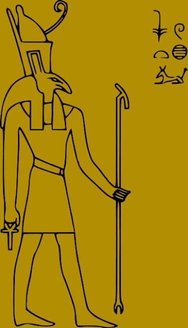
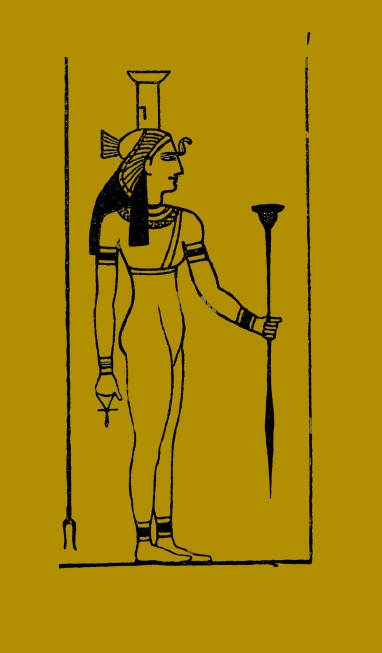
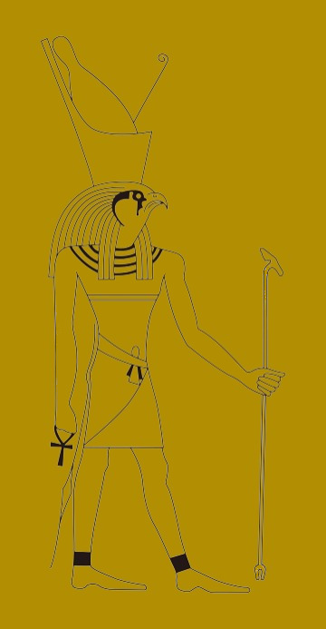
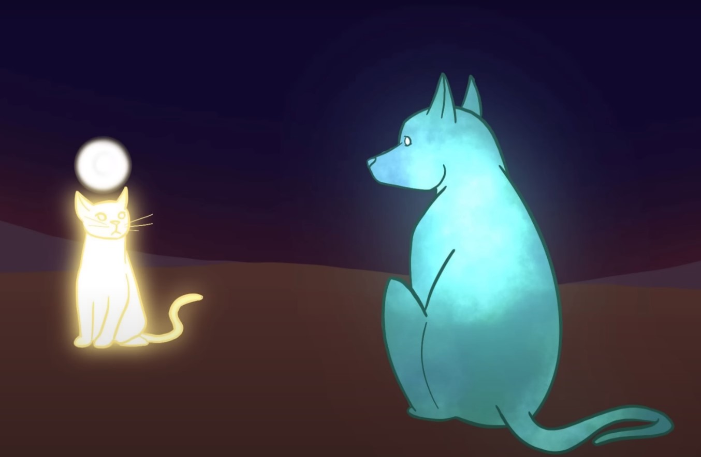
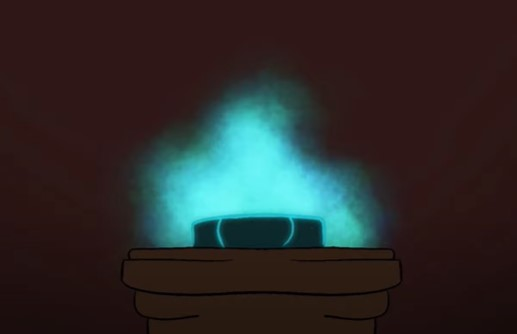
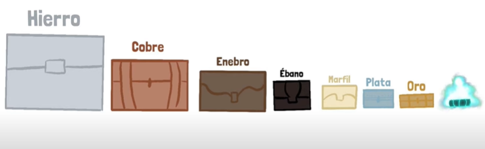
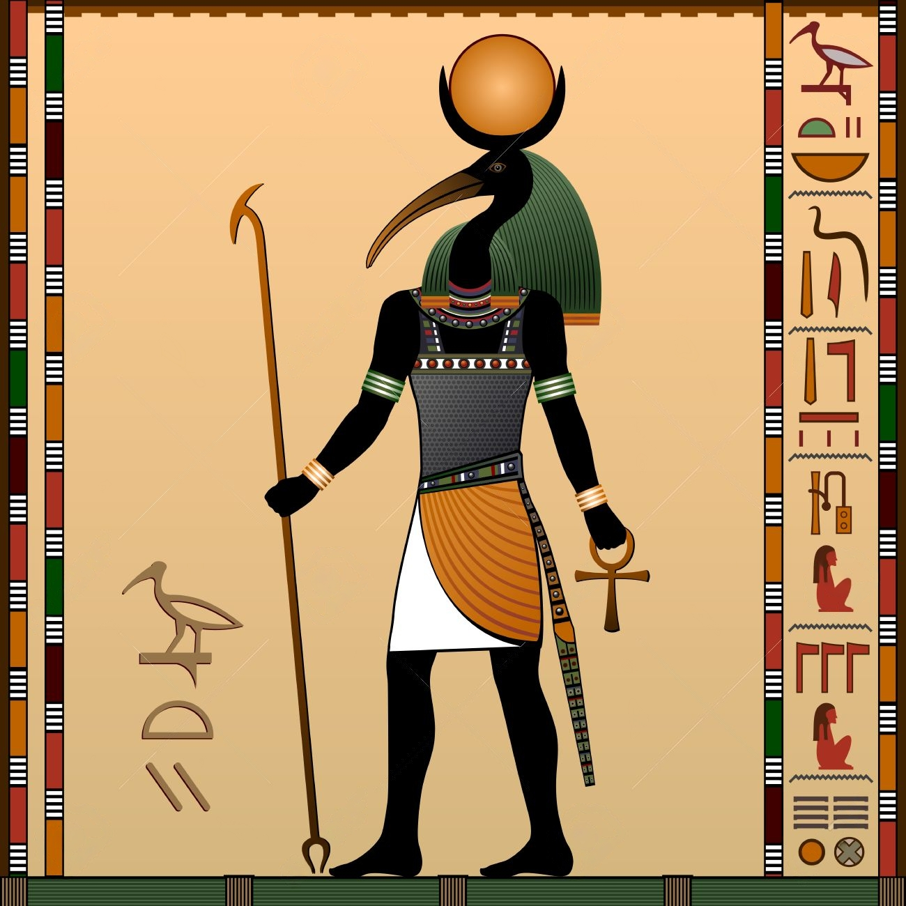

Thot es conocido como el dios de la sabiduría, las artes,
las ciencias y los escribas en la mitología egipcia.
Su papel es esencial en la preservación del conocimiento y la guía de las almas en el inframundo.
Representación de Thot
Thot es comúnmente representado como un hombre con cabeza de ibis o como un babuino sagrado.
Los ibis y los babuinos eran animales sagrados asociados con la escritura y la sabiduría en la antigua cultura egipcia.
Importancia en la mitología y cultura
Thot desempeñó un papel crucial en la creación del mundo y fue considerado mediador en las disputas divinas.
Thot fue el creador de los Heru Renpet (los cinco días epagómenos), tomándolos de la luz de Khonsu, la luna.
Estos nuevos días permitieron a Nut parir cuatro hijos: Osiris, Seth, Isis y Neftis;
pues Ra le había impedido tenerlos en cualquier otro día del año.
Osiris
Isis
Seth

Neftis

Horus el Mayor

Mitos de Thot
Uno de los mitos más conocidos de Thot es su participación en el juicio de Osiris.
Se le atribuye la creación de la balanza utilizada para pesar los corazones de los difuntos y determinar su destino en el más allá.
Otro mito importante fue su intervención en la huida y regreso del ojo de Ra, en el que Thot logró traerlo de vuelta.

Libro Prohibido de Thot
Uno de los mitos más conocidos sobre Thot habla de un libro que él mismo escribió, que contenía una gran cantidad de magia.
Este libro está prohibido a la humanidad, debido a todas las capacidades que podía otorgar, tales como el manejo de la naturaleza,
entender a los animales, ver a los dioses en su verdadera forma, etc.
Aquel libro fue sumergido en el océano y protegido por serpientes, dentro de varios cofres, cada vez más pequeños y hechos de un material más
valioso.


Aportaciones de Thot
Thot fue el inventor de la escritura y se le atribuye la creación de los jeroglíficos y otros sistemas de escritura utilizados en Egipto.
Su contribución a la ciencia y la cultura egipcias fue fundamental para el desarrollo de la civilización.
